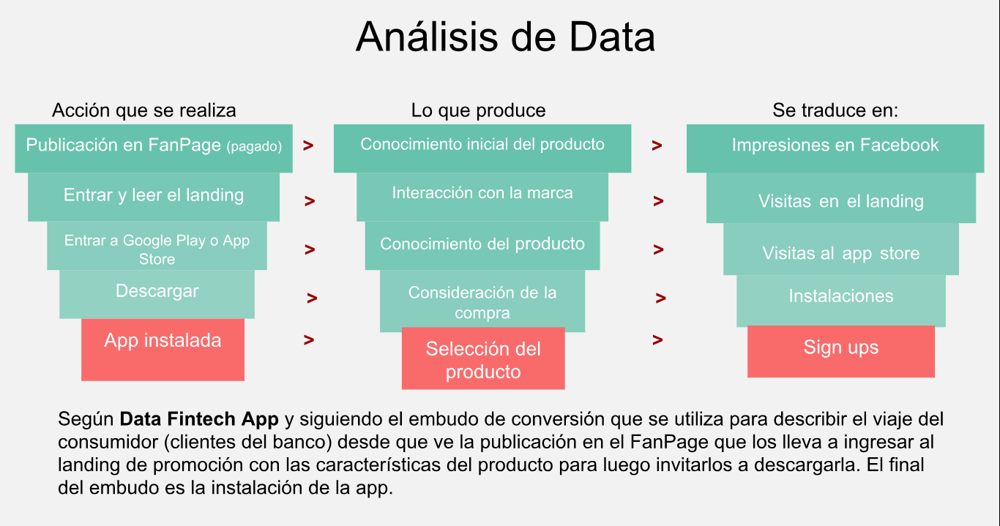

Mis Finanzas
Una APP del Banco El País

Una APP del Banco El País
Identificar cuáles son los factores en los que es necesario iterar para atraer a los usuarios a bajar la aplicación y se mantengan activos en su uso.
Solución: Rediseñar el prototipo
Duración: 10 días.
Entendimiento del problema
Entrevista con el cliente/usuarios

Testeo solución existente
Lluvia de ideas

Sketch/Prototipo
Testeo nueva solución
Hace seis meses el banco más importante del país lanzo una nueva aplicación al mercado. Esta permite a los usuarios visualizar sus gastos mensuales y ahorrar. Por lo que desean un nuevo diseño y plan de marketing para su trabajo.

Según los resultados de la Encuesta Financiera de Hogares (EFH) dada conocer por el Banco Central, los hogares que en Chile ahorran van en aumento. Cifra que es positiva porque deja en evidencia que la población tiene conciencia de que debe resguardar fondos no solo por obligación como lo es la cotización obligatoria si no a través de métodos formales para ahorrar como bancos o cooperativas.
Para comenzar esta investigación revisamos la información disponible en los distintos medios nacionales para entender el contexto en el que se desarrollaba esta Fitch App.
Según los resultados de la Encuesta Financiera de Hogares (EFH) dada conocer por el Banco Central, los hogares que en Chile ahorran van en aumento. Cifra que es positiva porque deja en evidencia que la población tiene conciencia de que debe resguardar fondos no solo por obligación como lo es la cotización obligatoria si no a través de métodos formales para ahorrar como bancos o cooperativas.
El equipo del banco nos hizo llegar la data con las estadísticas de tráfico de su APP, con ella hicimos las siguientes observaciones: Según la data el número de personas que entran al landing es alto porque lo hacen desde cualquier dispositivo con acceso a internet pero al estar habilitada solo la aplicación para descargar desde la APP store de iphone ese porcentaje disminuye considerablemente. Esa información es desconocida para los usuarios debido a que en el landing no lo menciona.
- La información sigue reflejando que por medio de dispositivos con sistema Android las personas ingresan al landing pero no logran convertir en descarga la app porque no pueden realizarla.
- Las sesiones de los usuarios son más activas cuando se lanzó la aplicación, pero existe un porcentaje que solo la descargo y la dejo instalada sin utilizar.
- Las sesiones duran más cuando ingresan desde un computador de escritorio con un minuto de diferencia más sobre las que inician desde mobile. Esto, creemos que se debe porque las personas ingresan desde el landing y su viaje hasta la descarga es más largo.

Entrevista con Training manager Nos reunimos con Allison, training manager del equipo de desarrollo de la APP. Con ella logramos conocer cuáles eran las motivaciones del banco para llevar a cabo la aplicación, quien nos comentó que esta decisión fue una solicitud en parte de los clientes y del mismo banco, debido al fenómeno mundial de aplicaciones financieras. La aplicación tiene como objetivo a traer a usuarios más jóvenes y de esta forma fomentar el ahorro, a su vez, que estos se mantengan activos en su uso porque identificaron que a pesar de las descargas su uso no se mantenía en el tiempo.
El diseño se realizó en base a los colores de la institución y se encuentra disponible solo para usuarios IOS, es decir personas que tienen IPhone. Esta medida se tomó por la información que les entrego el equipo de marketing. Para dar a conocer la aplicación a sus clientes crearon un landing page que difundieron por medio de campañas de pago en redes sociales como Facebook y televisión. Facebook fue una de los lugares que llevo a más público a descargar la app pero no tanto como pensaban.
Para esta investigación entrevistamos a seis personas usuarias de algún banco en Chile y que en su celular tuviesen la app de su banco. A través de un cuestionario, conocimos de qué forma interactúan con su banco día a día y cómo utilizan la app. Además de sus formas y razones para ahorrar.
- Cuatro de los seis entrevistados tienen sistema operativo Android.
- Solo uno un celular de prepago al que le compra bolsas para acceder a Internet.
- Para los entrevistados las app de su banco son confiables porque identifican características que les otorgan seguridad como el pedir la huella digital para ingresar a la sesión, notificar por correo o sms los movimientos que se realizan dentro de la app y contar con un sistema de cierre automático apenas se deje de usar o se encuentre inactiva la sesión.
- Para ahorrar dos de los usuarios lo hacen a través de fondos mutuos, los que pueden monitorear de manera constante a través de la aplicación de su celular.
- Mas de uno de los entrevistados tenía dos cuentas en el mismo banco (vista y corriente) entre la que se traspasaba fondos como forma de ahorro.
- Dos solo son clientes del banco porque fue el único que sin ningún requisito previo que ser mayor de 18 años les permitió abrir una cuenta.
- Uno de los entrevistados prefiere el método tradicional de ahorro y el contacto directo con su ejecutiva.
Con estas entrevistas logramos identificar que los usuarios tienen la disposición a utilizar una 2 App “solo” cuando esta tenga una buena valorización y beneficios para ellos.